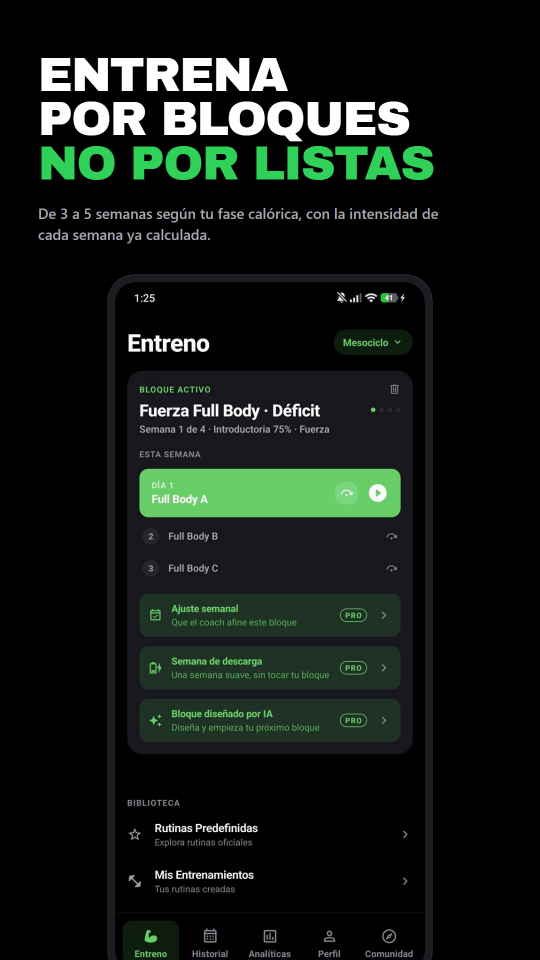
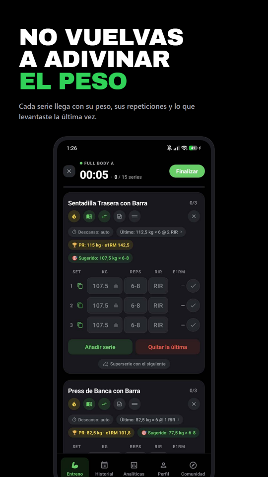
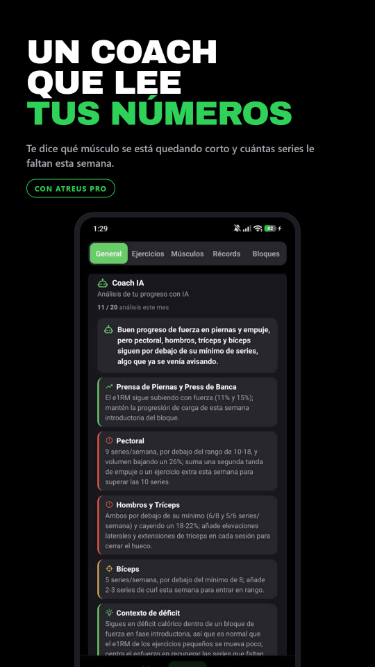

Atreus es un registro de entrenamiento para quien entrena con un plan: apunta la sesión, sigue el bloque y comprueba si los números se están moviendo de verdad.
Qué hace
Registro rápido
Series en RIR o RPE, superseries, drop sets, rest-pause, calentamientos, temporizador de descanso que sigue corriendo con la pantalla apagada, y modos propios para fuerza, peso corporal, trabajo por tiempo y cardio.
Periodización que se adapta
Bloques de acumulación, intensificación y descarga con objetivos por sesión, autorregulación diaria según cómo llegues, y 1RM estimado y récords calculados solos.
Funciona sin cobertura
Cada serie se guarda primero en el móvil, así que el sótano del gimnasio da igual. Lo que hay se sincroniza cuando hay red, con copia de seguridad y restauración entre dispositivos.
Analítica que se entiende
Volumen semanal por grupo muscular, progresión por ejercicio, comparación entre bloques y un histórico de récords. 167 ejercicios con guía técnica.
Entrenador IA (Pro)
Escanea una rutina desde una foto o pégala como texto, genera un bloque a medida, y pregunta a un entrenador que lee tu propio historial.
Tu cuerpo, en tu móvil
Peso, medidas y fotos de progreso que no salen del dispositivo. Ni se suben, ni se comparten, ni se usan para nada más.



Y además
Importa tu historial desde Strong, Hevy y FitNotes, exporta a CSV cuando quieras, widget en la pantalla de inicio, integración con Health Connect, amigos y rutinas que puedes compartir con un enlace.
Privacidad
Lo más sensible —peso corporal, medidas, fotos— se queda en el dispositivo y no viaja a ningún servidor. Lo que sí se sincroniza para que no pierdas el historial al cambiar de móvil está protegido con permisos a nivel de columna, de forma que tus datos sólo son legibles por tu cuenta. Los detalles, en la política de privacidad.
🇪🇸 Español arriba · 🇬🇧 English version below
Atreus — Gym Workout Log
Atreus is a workout log for lifters who train with a plan: log the session, follow the block, and see whether the numbers are actually moving.
Fast logging
Sets in RIR or RPE, supersets, drop sets, rest-pause, warm-ups, a rest timer that keeps running with the screen off, and dedicated modes for strength, bodyweight, timed work and cardio.
Periodization that adapts
Accumulation, intensification and deload blocks with per-session targets, daily auto-regulation based on how you show up, and automatic 1RM estimates and PR tracking.
Works with no signal
Every set is written to the phone first, so the gym basement does not matter. It syncs when there is a connection, with backup and restore across devices.
Analytics you can read
Weekly volume per muscle group, per-exercise progression, block-by-block comparisons and a record history. 167 exercises with technique guides.
AI Coach (Pro)
Scan a routine from a photo or paste it as text, generate a training block, and ask a coach that reads your own training history.
Your body stays on your phone
Weight, measurements and progress photos never leave the device. Not uploaded, not shared, not used for anything else.


Also: import your history from Strong, Hevy and FitNotes, export to CSV, home-screen widget, Health Connect integration, friends, and routines you can share with a link. What does sync is protected with column-level permissions, so your data is readable only by your account — details in the privacy policy.